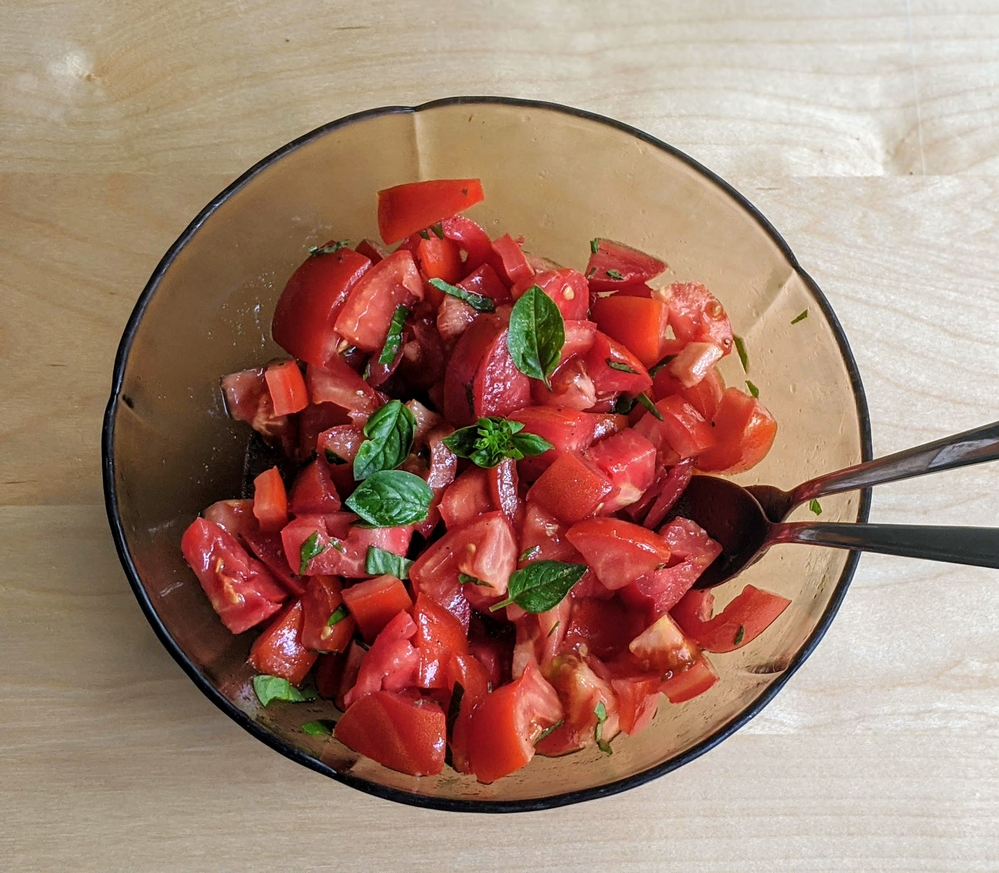

Salade de tomates

Pour 3 personnes :
- Entre quatre et six bonnes tomates bien mûres, suivant leur taille
- (Facultatif) Des billes de mozzarella
- Pas mal de basilic frais
- Une grosse cuillère à café de moutarde
- Une cuillère à soupe de vinaigre de xérès
- Une cuillère à soupe d'huile d'olive
- Sel, poivre
- Laver le basilic, en ciseler les trois quart, poser le reste sur une feuille de papier absorbant pour les sécher un peu.
- Laver les tomates, les sécher, les découper en dés pas trop petits, et les disposer dans un saladier.
- Mélanger la moutarde, le vinaigre, l'huile, le sel et le poivre dans un petit bol.
- Ajouter la sauce dans le saladier, mélanger délicatement. Si on veut ajouter de la mozzarella, l'ajouter au dernier moment et mélanger encore plus délicatement. Servir parsmé du reste des feuilles de basilic.
Remarque : si on a pas de vinaigre de Xérès, on peut utiliser du vinaigre balsamique. On peut aussi remplacer la moutarde par une cuillère à soupe de jus de citron. et ajouter des billes de mozzarella.
Retour à la liste des recettes